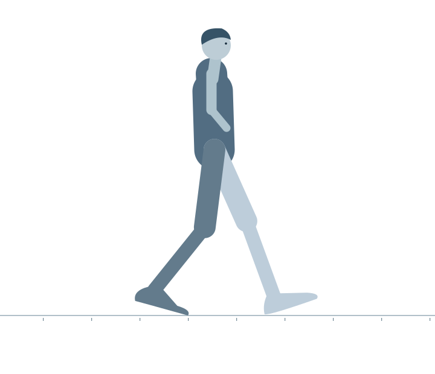
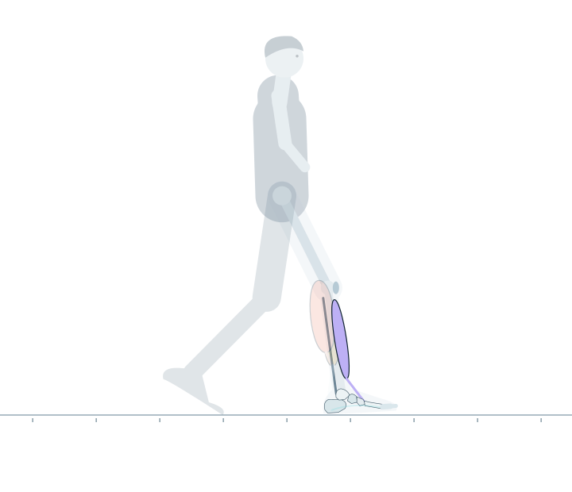
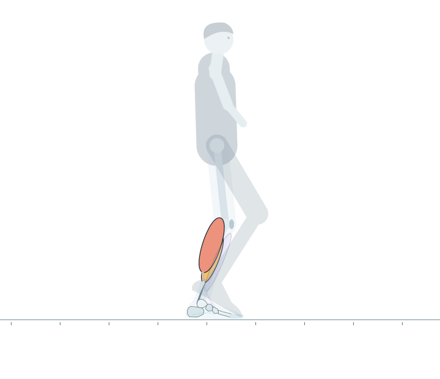
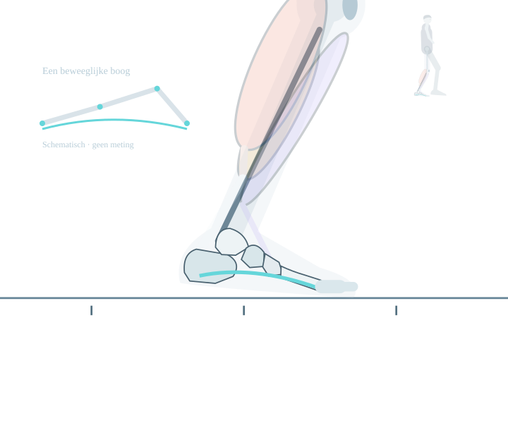
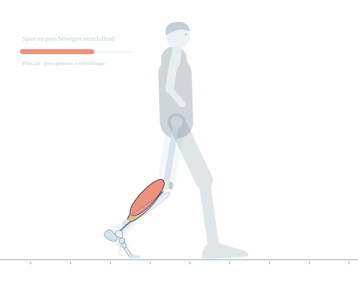
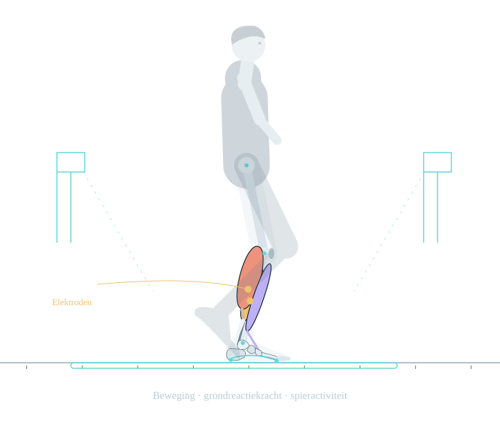
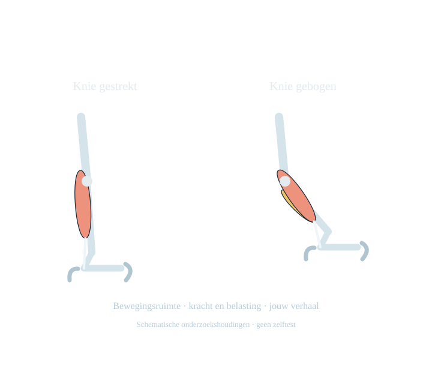
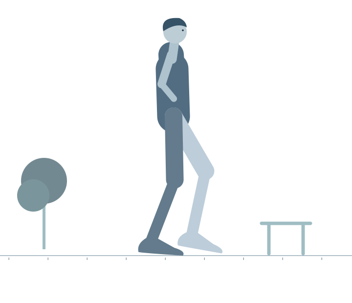

Een gewone wandeling
Je loopt. Zonder erbij na te denken.
Naar de keuken, naar de trein, een rondje buiten. Meestal denk je niet na over wat je voeten ondertussen doen. Tot een stap pijn doet of lopen moeilijker wordt.
Dan gaat de aandacht begrijpelijk naar die plek: de hiel, de enkel of de bal van de voet. Toch kijkt een behandelaar vaak ook naar de kuit, de knie en de manier waarop je loopt. Die onderdelen werken samen. Om dat te begrijpen, vertragen we een gewone wandeling.
We volgen één voet: vanaf het moment dat hij neerkomt totdat hij opnieuw de grond raakt. Daartussen zet ook de andere voet een stap. Samen is dat één volledige loopcyclus. 01, 03

Neerkomen
Neerkomen is een beweging op zich
Bij de wandeling die je hier ziet, raakt eerst de hiel de grond. Vervolgens komt de voorvoet geleidelijk naar beneden. Het been neemt steun over van het andere been. De knie buigt daarbij een beetje mee.
Aan de voorkant van het onderbeen lopen spieren die de voet kunnen optillen. Een daarvan is de tibialis anterior. Deze spier helpt ook om de voet na het eerste contact gecontroleerd neer te zetten. Het is dus niet simpelweg een voet die op de grond valt. 01, 06
Straks is diezelfde spier opnieuw nodig, wanneer de voet door de lucht naar voren beweegt. De functie van een spier hangt ook af van het moment in de stap.

Steun nemen
Je lichaam beweegt over je voet
De voet staat nu op de grond, maar je lichaam gaat verder. Het onderbeen beweegt naar voren ten opzichte van de voet. Daarvoor is bewegingsruimte in de enkel nodig.
De kuit doet in deze fase al mee. Hij wordt vaak alleen geassocieerd met afzetten, maar helpt ook tijdens het steunen en het voortbewegen van het lichaam. 03, 07, 08, 09
De twee grote kuitspieren liggen deels over elkaar. De gastrocnemius loopt vanaf boven de knie naar de achillespees. De soleus ligt dieper en begint onder de knie. Beide dragen via de achillespees kracht over op het hielbeen, maar de stand van de knie beïnvloedt ze verschillend. Dat onderscheid komt terug bij lichamelijk onderzoek. 04, 20

Een beweeglijke voet
De voet is geen vast blok
Onder je voet ligt een boog, opgebouwd uit botten, gewrichten en weefsel dat de voet ondersteunt. Die vorm is beweeglijk. Tijdens het lopen verandert de voet onder belasting en bij het loskomen van de grond. Ook kleine spieren in de voet doen daaraan mee. 10, 12, 13
De plantaire fascie, vaak peesplaat genoemd, loopt onder de voet vanuit de hiel naar de voorvoet. De stand van de tenen beïnvloedt de spanning in dit weefsel. Dat wordt vaak uitgelegd met een eenvoudig kabelmodel.
Zo'n model helpt om het principe te begrijpen, maar tijdens lopen gebeurt meer. De peesplaat is vervormbaar en spieren zijn actief. De grote teen omhoog bewegen betekent daarom niet dat de hele voet meteen als een starre hefboom op slot gaat. 11

De volgende stap
Loskomen en weer naar voren
Als het lichaam verdergaat, komt de hiel omhoog. De voorvoet en tenen houden nog even contact met de grond. De andere voet komt neer en neemt steun over. Daarna komt ook deze voet los.
Kuitspieren en achillespees dragen bij aan die overgang. De pees kan tijdens lopen elastische energie opslaan en weer teruggeven. Spier en pees gedragen zich daarbij niet hetzelfde: uit de beweging van de enkel kun je niet rechtstreeks aflezen hoeveel een spierbundel korter of langer wordt. 04
Ook afzetten is meer dan alleen de romp vooruitduwen. De overgang hangt samen met de beweging van het hele lichaam én met het naar voren brengen van het been. 05
Nu zwaait de voet door de lucht. Het been buigt en beweegt naar voren; de voetheffers helpen om de voet vrij van de grond te houden. Vervolgens bereidt het been zich voor op het volgende contact. 06

Meten en begrijpen
Wat ziet een loopanalyse?
Veel van deze bewegingen gaan te snel om tijdens één wandeling precies te volgen. Een behandelaar kan kijken hoe iemand loopt en beelden zo nodig vertraagd terugzien. Bij een specifieke vraag kan uitgebreider onderzoek in een looplab helpen.
Daar kunnen camera's de beweging volgen met kleine markers op de huid. Krachtplaten meten hoe iemand tegen de grond duwt. Elektroden kunnen de elektrische activiteit van bepaalde spieren registreren. Soms wordt ook de drukverdeling onder de voet gemeten. Het zijn verschillende manieren om naar dezelfde wandeling te kijken. 14, 15
De metingen geven niet allemaal hetzelfde antwoord. Beeld laat zien hoe iets beweegt. Een krachtplaat meet geen pijn. En elektrische spieractiviteit is niet hetzelfde als spierkracht. Voor sommige uitkomsten zijn bovendien berekeningen nodig, met aannames over het lichaam. 15, 16
Ook nauwkeurige apparatuur heeft grenzen. Markers zitten op de huid, niet rechtstreeks op het bot. Daarom horen de meetgegevens bij het lichamelijk onderzoek en het verhaal van de persoon die loopt. Een afwijkende lijn in een grafiek is op zichzelf nog geen diagnose. 14, 17, 18

De hele persoon
Waarom kijken we ook naar de kuit?
Wanneer de enkel minder bewegingsruimte heeft, kan de manier van lopen anders zijn. Daarbij kunnen ook de knie en heup meedoen. Maar niet iedereen past zijn beweging op dezelfde manier aan. 21
Bij sommige groepen mensen met voorvoet- of middenvoetklachten is minder enkelbeweeglijkheid gevonden wanneer de knie gestrekt is. Dat maakt de kuit een relevant onderdeel van het onderzoek. Het bewijst niet dat een beperkte kuit bij iedereen de oorzaak van de pijn is. 20
Een behandelaar kan de enkel daarom onderzoeken met de knie gestrekt en gebogen. Dat helpt om de mogelijke bijdrage van de gastrocnemius te beoordelen. De uitvoering en de manier van meten doen ertoe; één getal is geen zelfstandig oordeel over wat er mis is. 22
Daarnaast blijft de vraag wat iemand voelt en wanneer: waar zit de pijn, bij welke belasting treedt die op en wat is er veranderd? Een bewegingsmeting vervangt die vragen niet. Ook gericht onderzoek van de pijnlijke voet blijft nodig. 23

Terug naar het lopen
Meer begrijpen van een gewone stap
Een voet vangt op, ondersteunt en komt weer los. Ondertussen bewegen het onderbeen, de knie en de rest van het lichaam mee. Dat samenspel maakt lopen mogelijk.
Een loopanalyse kan helpen om dat samenspel beter te begrijpen. Welke informatie nodig is, hangt af van de vraag. Niet iedereen met voetklachten heeft daarvoor een uitgebreid looplabonderzoek nodig. 18
De reden om verder te kijken dan de pijnlijke plek is dus niet dat daar niets aan de hand is. Het gaat erom die plek te begrijpen binnen wat de voet en het been samen doen.
Verder lezen: Waarom is de kuit belangrijk als de pijn in de voet zit?
Dit verhaal geeft algemene uitleg. Bespreek persoonlijke klachten met je huisarts of behandelaar.
